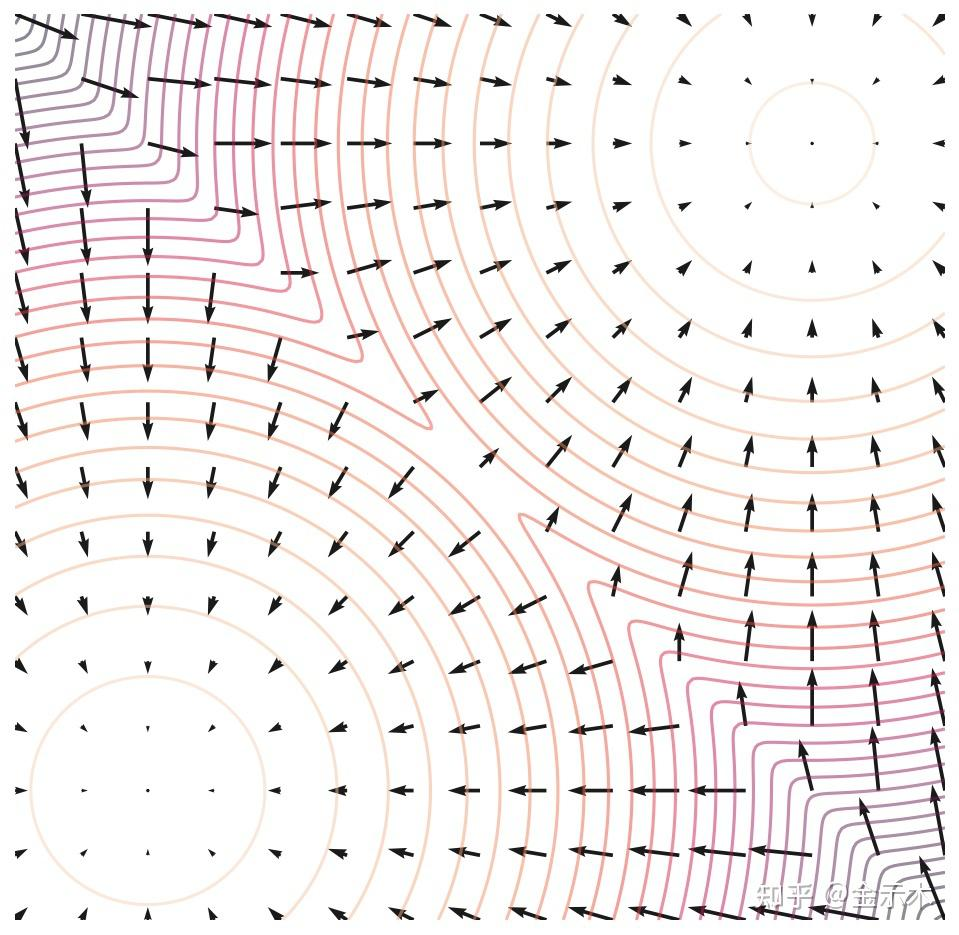

Score-based Generative Models
真正意义的“扩散”模型，从梯度角度理解加噪去噪
钟祚栋 / 学习笔记
GO UP! Diffusion + RL学习 03 ↗
宋飏大佬真的太强了，后续的 score-based SDE 更是无敌。
PAPER · YANG SONG & STEFANO ERMONGenerative Modeling by Estimating Gradients of the Data DistributionNeurIPS 2019 · arXiv:1907.05600 ↗
这篇文章也让我感到学数学物理的是真的强。Score-based Generative Models 从粒子扩散和梯度场的角度，让我重新理解了图像生成：一张图片可以看成高维空间中的一个点，而大量图片共同对应一个数据分布。
前向过程通过加噪，构造出一系列更平滑的分布；训练时，我们学习这些分布的梯度方向。生成时，再利用学到的梯度，从一个容易采样的初始分布逐步走向数据分布，也就是从 Prior 到 pdata 的过程。
对一个固定的干净样本来说，加噪后的条件分布的梯度，确实指向它的均值，而且可以证明这个方向与噪声相反。下面就沿着这条线，理解加噪、去噪和采样。
#Score 概念
先把概率密度写成能量模型（玻尔兹曼分布）的形式：
pθ(x)=Zθe−fθ(x),Zθ=∫e−fθ(x)dx.
这里 fθ(x) 是能量函数，Zθ 是归一化因子。我们关心的 score 是对数概率密度关于输入的梯度：
sθ(x)=∇xlogpθ(x)=−∇xfθ(x)−=0∇xlogZθ=−∇xfθ(x).
这样一来，不好求的归一化因子就消失了，因为它不依赖于 x。直观上，score 告诉我们：从当前位置出发，往哪个方向走，概率密度增长得最快。后面的 NCSN 会直接用网络拟合这个向量场。
与 DDPM 中噪声的关系
DDPM 的前向加噪可以写成：
q(xt∣x0)=N(xt;αˉtx0,(1−αˉt)I),xt=αˉtx0+1−αˉtϵ,ϵ∼N(0,I),αˉt=s=1∏tαs,αs=1−βs.
对这个条件高斯分布取对数，再对 xt 求梯度：
∇xtlogq(xt∣x0)=−1−αˉtxt−αˉtx0=−1−αˉtϵ.
这里可以看到：条件 score 就是噪声的反方向，二者差一个标准差的系数。因此，噪声预测网络也可以换一种参数化方式，表示为 score 网络：
sθ(xt,t)=−1−αˉtϵθ(xt,t).
把前面的条件 score 公式移项，DDPM 的加噪关系也可以这样写：
xt=αˉtx0−(1−αˉt)∇xtlogq(xt∣x0).
#Score Matching 构建梯度场
与 flow matching 中拟合向量场的形式相似，score matching 也采用平方误差来学习一个向量场。但问题是：真实分布的 score 求不出来。一个经典操作就是加上条件，把不可计算的目标换成可以直接计算的高斯条件 score。
从加噪的条件分布出发
这里改用原论文的加性高斯噪声记法。设干净样本为 x0∼pdata，噪声尺度为 σ>0：
x~=x0+σϵ,ϵ∼N(0,I).
qσ(x~∣x0)qσ(x~)=(2πσ2)d/21exp(−2σ2∥x~−x0∥22),=∫qσ(x~∣x0)pdata(x0)dx0.
d 是样本维度。条件分布的梯度容易计算：
∇x~logqσ(x~∣x0)=−σ2x~−x0=−σϵ.
这里也进一步证明了：对于固定的 x0，条件 score 是噪声的反方向。
为什么加条件后可以训练？
我们本来希望最小化的是：
JSM(θ;σ)=21Ex~∼qσ[∥sθ(x~,σ)−∇x~logqσ(x~)∥22].
把整体分布的 score 换成条件 score，就得到 Denoising Score Matching（DSM）：
ℓ(θ;σ)=21Ex0,x~[∥sθ(x~,σ)−∇x~logqσ(x~∣x0)∥22]=21Ex0,ϵ[sθ(x0+σϵ,σ)+σϵ22].
两者只相差一个与模型参数 θ 无关的常数，所以它们对训练的优化目标是等价的：
ℓ(θ;σ)=JSM(θ;σ)+Cσ.
展开推导：这个常数从哪里来？
记条件 score 为 u=∇x~logqσ(x~∣x0)。在通常的可微与可积条件下：
E[u∣x~]=qσ(x~)∫pdata(x0)∇x~qσ(x~∣x0)dx0=qσ(x~)∇x~qσ(x~)=∇x~logqσ(x~).
把条件期望记作 uˉ，平方误差可分解为：
E∥sθ−u∥22=E∥sθ−uˉ∥22+E∥u−uˉ∥22.
交叉项为零，第二项不依赖于网络参数，这就是 2Cσ。
延伸视频 · BILIBILI真正搞懂扩散模型 Score Matching 一定要理解的三大核心问题原文推荐的推导讲解 ↗
多个噪声尺度，一起学习
原论文选取一组从大到小的噪声尺度，并让同一个网络接收样本和噪声尺度两个输入：
σ1>σ2>⋯>σL>0,sθ(x~,σi)≈∇x~logqσi(x~).
使用权重 λ(σi)=σi2，总损失为：
L(θ)=L1i=1∑Lσi2ℓ(θ;σi)=2L1i=1∑LEx0,ϵ[∥σisθ(x0+σiϵ,σi)+ϵ∥22].
这个加权有助于平衡不同噪声尺度下的训练目标。它并不意味着损失完全不依赖 σi，因为输入样本和网络的条件仍然随噪声尺度改变。
经过训练，我们希望得到类似下面这样的梯度场：

原文中的梯度场示意图。箭头表示局部概率密度增长的方向。
更准确地说，整体分布的 score 指向的是条件均值的方向，而不是指定的一张原图：
∇x~logqσ(x~)=σ2E[x0∣x~]−x~.
#Langevin dynamics 如何从 score 得到图像
有了梯度场，下一步就是采样。这里宋飏大佬借助了物理学中的朗之万动力学（Langevin dynamics）：粒子一方面受到势能力和摩擦的影响，另一方面受到随机热噪声的扰动。
直观上，score 把样本推向高密度区域，随机扰动则让样本保持探索。两者一起作用，才是在采样一个分布，而不只是做梯度上升、最终停在某个峰值。
从粒子运动到采样公式
设势能为 U(x)，温度为 Tphys，玻尔兹曼常数为 kB。平衡分布与势能力分别是：
peq(x)=Z1exp(−kBTphysU(x)),F(x)=−∇xU(x).
因此，力和 score 的关系为：
∇xlogpeq(x)=−kBTphys∇xU(x)=kBTphysF(x).
包含惯性的朗之万方程写作：
dXtmdVt=Vtdt,=−γVtdt−∇U(Xt)dt+2γkBTphysdWt.
其中 γ 是摩擦系数，Wt 是布朗运动。当惯性弛豫时间 m/γ 远短于关注的时间尺度时，可以忽略惯性项，采用过阻尼近似：
dXt=−γ1∇U(Xt)dt+γ2kBTphysdWt=γkBTphys∇logpeq(Xt)dt+γ2kBTphysdWt.
离散化时，布朗运动的增量满足 ΔW∼N(0,ΔtI)。令 η=2kBTphysΔt/γ，就得到常见的采样形式：
Xn+1=Xn+2η∇logp(Xn)+ηzn,zn∼N(0,I).
将真实 score 换成学习到的网络，就能用它来更新样本：
x~n+1=x~n+2ηsθ(x~n,σ)+ηzn.
退火朗之万动力学采样
单一噪声尺度还不够。原论文从大噪声开始，逐级减小标准差，在每一级上执行若干次 Langevin 更新。这就是 Annealed Langevin Dynamics。
Algorithm 1 · Annealed Langevin Dynamics
输入：噪声序列 σ1>⋯>σL>0，最小噪声级的步长 ηmin>0，每级迭代次数 K。
- 从一个容易采样的初始分布取样，记为 x(0)。
- 依次遍历 i=1,…,L，设置该级步长，对每个噪声级执行下面两步：
ηi=ηminσL2σi2.
- 在第 i 级内，重复 k=1,…,K：
zkx(k)∼N(0,I),=x(k−1)+2ηisθ(x(k−1),σi)+ηizk.
- 把当前输出传给下一个噪声级：x(0)←x(K)；全部噪声级完成后返回最终样本。
这里的 ηmin 对应原论文算法中的步长参数 ϵ，K 对应原算法的内循环次数 T；换一组符号，是为了不和高斯噪声、物理温度混淆。
模型在每次更新时的输入，是上一步的样本和当前循环的标准差。每个噪声级的最后一个样本，作为下一级的初始样本。
pinit⟶qσ1⟶qσ2⟶⋯⟶qσL≈pdata. 这条路径表示采样逐步逼近不同噪声尺度的分布。大噪声级负责探索整体结构，小噪声级逐渐补上细节；步长与 σi2 成正比，随机项的幅度则与 σi 成正比。
#问题讨论
1. 流形假设
真实数据可能集中在高维空间中的低维流形附近。如果直接对这样的分布求 score，环境空间中的概率密度与梯度可能不好定义；远离数据的区域，也缺少足够的样本来学习可靠的方向。
加噪声有助于解决这个问题。高斯扰动把分布平滑到周围空间，让梯度更容易定义和学习；较大的噪声还能覆盖原始数据的低密度区域。
2. 标准差为什么要改变？
我的直观理解是：大的标准差用于“铺开”数据，增加覆盖范围；小的标准差用于最后逐步靠近真实数据。
- 大标准差：平滑分布，帮助跨越低密度区域、探索不同模式，可以看成比简单数据增广更进一步的作用。
- 小标准差：让加噪分布接近原始数据分布，在已有结构上逐步细化。
所以，这里的目标不是恢复某一张指定的 x0，而是让最终生成的样本分布接近 pdata。从这个角度再看“加噪—去噪”，整个过程就连起来了。